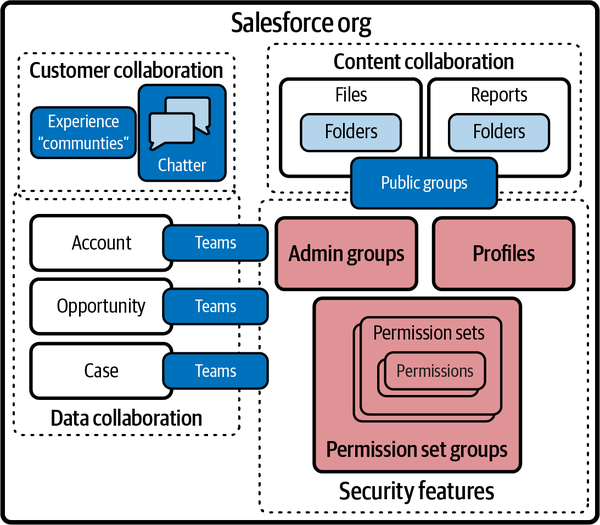
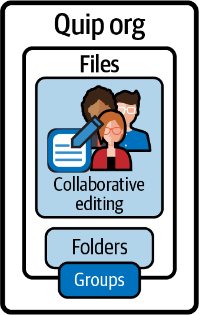
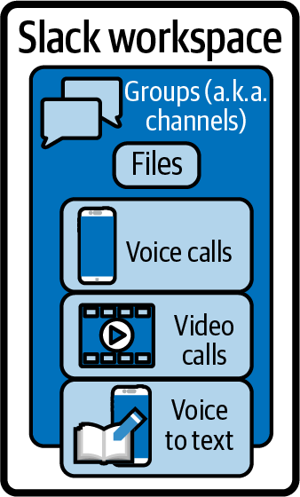
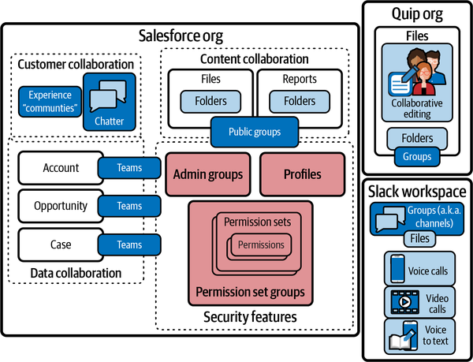

The entirety of the Salesforce platform could be considered a collaboration suite (for the purposes of this chapter, we’ll define collaboration as “end user to end user,” where an end user can be a customer). But Salesforce is not a generic sharing tool; it’s a rather specific sharing tool. The Sales Cloud functionality is at its core a way for salespeople to collaborate remotely with a central office. Salesforce added the Experience Cloud (formerly Community Cloud, a.k.a. “Communities”) functions to enable even more granular collaboration between sales teams and customers. Salesforce objects like Contacts, Cases, Accounts, and Orders are all about sharing data with different sets of users.
Collaboration and social sharing have been very hot topics in the industry in the past decade. Digital transformations to empower self-service tools and collaboration have been widely debated, since it is extremely difficult to measure their value. The value proposition that each cloud offers involves its strengths and the other peripheral functions that it does well enough to keep you from having to buy other products. If you need Salesforce but not necessarily best-in-breed collaboration, you can probably save money and resources by staying inside this single vendor’s offerings. Managing multicloud and multiple best-in-breed systems adds a management and resource penalty that is not insignificant. This is another tipping point that can help you determine when it is appropriate to move one way or the other.
Within Salesforce there are several functional components that have broad sharing functions. These tools can be leveraged in a variety of ways. It’s important to know that these less-discussed functions exist before you consider integrating one of the more popular versions that exist outside of the Salesforce ecosystem. They’re a good fit for many designs, and knowing about them can help you decide when to use them and when to consider others. Figure 6-1 shows some conceptual groupings of the collaboration features in Salesforce to illustrate where they are relevant.
Sharing in Salesforce tends to mean having permission to see data/records. In the collaboration space, sharing is a bit more unbridled than Salesforce’s record-by-record approach: it generally means being able to communicate about, cooperate on, and exchange multiple types of information.

This figure also includes some permissions concepts that have similar names, for awareness. These concepts will be covered in depth in the next chapter.
Chatter is the original collaboration and chat tool built into Salesforce. It enables sharing of files and information and group discussions, as well as tagging or following items and adding notes with a chat dialog style. Chatter is less of a standalone chat application than a messaging framework that is available within other functions. It’s probably most easily likened to Yammer or Disqus. Most of the time, Chatter is used to add notes and comments to specific records or items in Salesforce. There is also an option to put comments into a central forum within applications, or org-wide. Chatter was hard to get excited about because the web-based controls are just not as dense as those provided by other chat systems, like Slack (now also part of Salesforce, and discussed later in this chapter), Messenger, or Teams. Also, the fact that Chatter is embedded into the Salesforce interface, so it’s never used on its own, may have contributed to people preferring other, more focused chat tools.
There are two implementations of user “groups” within Salesforce. Both refer to lists of users: one is a private, administrator-controlled selection of users, and the other is a public, user-created list of collaborators. The public group function relates to sharing files, reports, and records within the application. There are programmatic ways to synchronize both types of groups with external control systems, but these user groups have a fairly specific coupling to Salesforce record functions. Because of this, equating Salesforce groups with standard access control lists (ACLs) is seldom appropriate.
Permission set groups (PSGs) in Salesforce are highly reusable and can easily be mapped to other enterprise systems of record. PSGs are groups of permissions based on a job function, to which members can be added. Those members could be considered a group, but that’s not how they are labeled or referred to within Salesforce circles. Think of groups as a small component of permission functionality and a separate small component of data sharing among users. Salesforce has a great deal of granularity in permissions, and the number of terms to learn can be overwhelming!
Not to be confused with the chat and collaboration tool Microsoft Teams, teams in Salesforce are very similar to the groups described in the previous section. Salesforce implementations are commonly focused on three goals: Account management, Opportunity management, and Case management. These are all core functions of sales and service, as well as being key objects within the Salesforce data model. If more than one person is working on any given record or associated records of these objects, you have the option of creating a team of users, who may have different rights. “Account teams,” “Opportunity teams,” and “Case teams” are common collaboration and sharing functions in those sales and service work processes. Teams are usually administered by users in a certain role and not a system administrator.
Cases or tickets are part of the core Salesforce platform, which provides a decent set of useful functionality. Service Cloud provides a large set of enhanced capabilities on top of the base Case functionality. Service Cloud is a licensed package add-on for your Salesforce org. It revolves around Cases, but you can use Cases without having Service Cloud.
Files (formerly referred to as attachments) and Salesforce Files are another set of terms that could be confusing to some. All object records can be configured to have files (documents) associated with them. There were originally two different backend binary object storage methods, but these have since been merged in the backend. When files are uploaded, they can be associated with multiple records or have their access granted to multiple users. Associating a file with a record does not make a copy of it; the file content is independent of the associations.
The term Salesforce Files refers to the newer backend technology for file storage, which adds the concept of folders for organization and sharing. Folders can be shared in the same way that files can. Since sharing relationships and folder structures are data elements and not related to a filesystem, it’s very easy to work with them and rearrange them. The actual file content itself is not as easy to code around.
Salesforce Files work fine for most use cases, but you can run into hurdles when trying to program with them. File data is currently stored in database item storage, and that leads to some size and throughput constraints. The ability to manipulate database data in memory is also limited on the platform, and this can cause challenges in circumstances like copying, appending, reading, and testing. Salesforce encourages more complex or large file storage requirements to be met on platforms like Amazon S3. There are many connectors that enable this almost seamlessly, without much effort.
Similar to files, reports and dashboards can be created inside the platform and shared via report folders. Though they work the same way, these are a different type of logical container than the folders used for files. That means you won’t ever see a folder with both reports and files in it. Reports aren’t used much for collaboration, at least not in an interactive sense, but due to the similar folder construct that is used to manage them, it seemed appropriate to reference them here.
Quip is an acquisition that has been getting very slowly integrated into the platform over the last few years. Quip itself is an entire collaboration platform that has similar functionality to Google Docs or Microsoft Office Online. Documents can be shared and used as wiki pages, and there’s a local desktop or mobile application that supports working offline. There’s also a chat and messaging function built into Quip that is separate from Chatter. Quip isn’t intended to be used as a bulk file storage system, for the same reason as Salesforce Files. However, this can be viewed as a solid new “mobile office” component as the world returns to a commuting habit and re-embraces mobile productivity. For a simplified comparison, Figure 6-2 shows a functional representation of the standout features of Quip.

Slack is a widely used team and group chat and collaboration system, recently acquired by Salesforce. As it rose to popularity with developers, it caused a mindset shift that no one was expecting: “chat-centric productivity.” Slack reverses the concept of chat in apps, and instead brings apps to chat. This reversal may not sit as well with the lifestyle of highly conversant and collaborative people as it does with those that are heads-down most of the day and want to be able to filter out distractions. Slack has support for audio and video calling built in, as well as for variants like “huddles,” which are ongoing calls that you can join/leave any time (Figure 6-3).

Another key feature of Slack is the way that it integrates other applications. Application notifications can either come in as independent message channels or inline with your current chat windows. Calendar or meeting reminders don’t pop up in other windows, requiring you to break focus and multitask. Another focus-harnessing function is that Slack leans in to typing keywords to perform other functions. This reduces the need to lift your hands off the keyboard and start mousing. It’s kind of like when you finally install an ad blocker on your browser; the serenity of noise reduction is quickly tangible.
Salesforce has promised that it will embrace a Slack-first reimagining of all its products. I interpret this to mean data prompts and calls to action will take a back seat to the primary work function of users. This migration to a curated experience rather than multiple panes of pulsating alerts will do a lot for the industry of information workers. I love hearing about new hybrid systems that combine search and data into a single-line call. I hope other platforms lean in to this cleaning up of worker interfaces as well.
Salesforce has a lot of functionality enabling you to share specific information with specific people or groups. Figure 6-4 gives an overview of what’s inside the circle and reusable, and what strengths you might need to seek elsewhere.
Quip is a product that has some functional parity with SharePoint or OneDrive, in addition to its web-based document editing functions. Slack seems to be set to compete with Teams for communication, but I’m not sure if it will tackle the file sharing capabilities of Teams/SharePoint in the near term. Experience Cloud (Community) does seem to be regularly adding more collaboration functions, enabling customer-to-representative and even customer-to-customer communication as well as providing interactive knowledge and resources that can reduce support efforts and increase satisfaction. This will be an interesting space to watch.

Salesforce’s ecosystem is about sharing information, but in very intentional and structured ways. The company’s investments and roadmap all seem to focus on this, with the exception of the Slack acquisition. Expect the focus on Slack’s “quality of life” slant to work its way through the platform in subtle ways. Efforts to enable water-cooler interactions and self-governed libraries will probably continue to thrive only in tools like SharePoint, Confluence, and Facebook. Considering the number of ways there already are to share data within Salesforce, it’s probably a good thing to not have an unmanaged area to police as well.
With collaboration comes greater risk of accidental oversharing. Salesforce has only enabled collaboration features whose value greatly outweighs their risk, but regular reviews of the achieved value of those risky capabilities should be conducted. Making sure you keep up with how much freedom you are giving users to influence data exposure is key. Be modern and flexible, but be sure to review, track, and communicate your risks.
The biggest challenge in trying to look at Salesforce in terms of collaboration is that there is no single cohesive governing model. You can share in so many ways that it is easy to lose track. Hopefully the promise of a Slack-first reboot of the Salesforce workspace will make collaboration a more cohesive story.
With the focus on resource management, organic operations without a direct impact on the bottom line (like sales) will probably remain a low priority for Salesforce going forward. Expect to see investments in integrations to other systems that focus on this functionality and can enable it at scale without sacrificing the multitenant performance model. Support for citizen developers and unregulated intranets and sharing seems to have cooled in the industry over the past few years, due to the need for content and oversight in almost equal measure. Content starts to get “bad” as soon as it’s uploaded and must be curated to keep from becoming out-of-date noise.
AI could change the game and do a much better job of finding the newest, most relevant content from among multiple unregulated sources. Look for investments in conversational AI to change the landscape of anything that used to depend on search or organization and/or findability patterns. If AI is allowed to pull information from chat logs and publications, the need to compile information into documents may soon be in the rearview. Adjust your roadmaps accordingly.
It is very important to note that I’m only covering here the native features of the core platform and the more collaboration-focused products, like Quip and Slack. Some third-party add-ons are used so often they are almost native. Many of these features have their own license costs associated with them, so while they may be native, they are not always free. It’s always a good idea to confirm that the features you think you are getting are included in your purchases and also have the usage capacity you are expecting.
The purpose of outlining all of these sharing and collaboration features is to expose how many boxes are checked in Salesforce, compared to dedicated collaboration platforms. If you want generic and semistructured file sharing or documentation, you can look outside of Salesforce’s core offerings. If you want a thoughtful and surgical application of sharing and communication, you can get that done with the features described here. Licensing for the larger components, like file storage and Slack, will continue to evolve. This should allow you to select your collaboration functions à la carte instead of wading into the massive landscapes of Confluence or SharePoint. Those systems and others like them are fantastic for intelligence-based organizations but require a lot of work to govern and secure. Precise functionality can be much more cost-efficient and manageable.